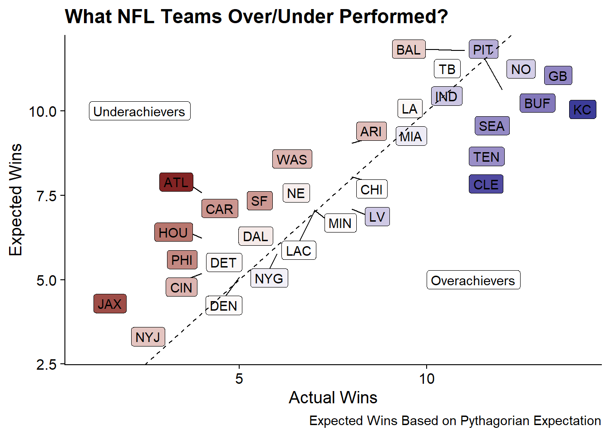

It’s Playoff Time in the NFL!. While my team has unfortunately missed the playoffs, I wanted to take advantage of the season to try to predict who will win the Super Bowl this year through two different mechanisms:
While ideally having more historical data would be better, I’m going to keep this exercise quick and dirty by only using the data from the 2020 NFL Regular Season which recently concluded. Data for this season can be easily imported using the nflfastR package. By using the fast_scraper_schedules function, I can quickly get all the games and their results for the 2020 season.
library(tidyverse)
library(nflfastR)
library(scales)
#Get Season 2020 Schedule and results
nfl_games <- fast_scraper_schedules(2020) %>%
#Weeks Beyond Week 17 Are the Playoffs
filter(week <= 17)
knitr::kable(head(nfl_games, 3))| game_id | season | game_type | week | gameday | weekday | gametime | away_team | home_team | away_score | home_score | home_result | stadium | location | roof | surface | old_game_id |
|---|---|---|---|---|---|---|---|---|---|---|---|---|---|---|---|---|
| 2020_01_HOU_KC | 2020 | REG | 1 | 2020-09-10 | Thursday | 20:20 | HOU | KC | 20 | 34 | 14 | Arrowhead Stadium | Home | outdoors | NA | 2020091000 |
| 2020_01_SEA_ATL | 2020 | REG | 1 | 2020-09-13 | Sunday | 13:00 | SEA | ATL | 38 | 25 | -13 | Mercedes-Benz Stadium | Home | NA | NA | 2020091300 |
| 2020_01_CLE_BAL | 2020 | REG | 1 | 2020-09-13 | Sunday | 13:00 | CLE | BAL | 6 | 38 | 32 | M&T Bank Stadium | Home | outdoors | NA | 2020091301 |
The package returned both the data I’m looking for, but also a lot of additional data that could be used if necessary (day of week, dome vs. outdoor, etc.).
Pythagorean expectation was developed by Bill James for Baseball and estimates the % of games that a team “should win” based on runs scored and runs allowed.
It was adapted for Pro Football by Football Outsiders to use the following formula:
Football Outside Almanac in 2011 stated that “From 1988 through 2004, 11 of 16 Super Bowls were won by the team that led the NFL in Pythagorean wins, while only seven were won by the team with the most actual victories”
There needs to be a little data manipulation to get the NFL schedule data into a format to calculate the pythagorean expectation. Most notably splitting each game into two rows of data to capture information on both the home team and away teams.
p_wins <- nfl_games %>%
pivot_longer(
cols = c(contains('team')),
names_to = "category",
values_to = 'team'
) %>%
mutate(points_for = (category=='home_team')*home_score+
(category=='away_team')*away_score,
points_against = (category=='away_team')*home_score+
(category=='home_team')*away_score
) %>%
group_by(team) %>%
summarize(pf = sum(points_for, na.rm = T),
pa = sum(points_against, na.rm = T),
actual_wins = sum(points_for > points_against, na.rm = T),
.groups = 'drop'
) %>%
mutate(p_expectation = pf^2.37/(pf^2.37+pa^2.37)*16)By pythagorean expectation the top 3 teams in the NFL are:
| team | points_for | points_against | actual_wins | expected_wins |
|---|---|---|---|---|
| BAL | 468 | 303 | 11 | 11.8 |
| NO | 482 | 337 | 12 | 11.2 |
| TB | 492 | 355 | 11 | 10.9 |
According to Pythagorean Expectation, the Baltimore Ravens are the best team in the NFL while the formula would say that the Kansas City Chiefs, the team with the most actual wins, “should” have only had 10.5 wins vs. the 14 actual wins they had.
The concept of “Expected Wins” allows us to see who outperformed their expectation vs. under-performed. The following plot shows actual wins on the x-axis and expected wins on the y-axis.
library(ggrepel)
p_wins %>%
mutate(diff_from_exp = actual_wins - p_expectation) %>%
ggplot(aes(x = actual_wins, y = p_expectation, fill = diff_from_exp)) +
geom_label_repel(aes(label = team)) +
geom_abline(lty = 2) +
annotate("label", x = 1, y = 10, hjust = 'left', label = "Underachievers") +
annotate("label", x = 10, y = 5, hjust = 'left', label = "Overachievers") +
labs(x = "Actual Wins", y = "Expected Wins",
title = "What NFL Teams Over/Under Performed?",
caption = "Expected Wins Based on Pythagorian Expectation") +
scale_fill_gradient2(guide = F) +
cowplot::theme_cowplot()
The largest over-achievers appear to be Kansas city, and Cleveland while the largest under-achievers were Atlanta and Jacksonville.
Bradley-Terry Models are probability models to predict the outcomes of paired comparisons (such as sporting events or ranking items in a competition).
In this case, to predict the future winner of Super Bowl LV. I’ll be using regular season data to estimate “ability parameters” for each team and then using those parameters to run simulations to estimate the winners of the NFL Playoff Match-ups.
The Bradley-Terry Model can be fit using the BradleyTerry2 package.
The BradleyTerry2 package can take data in a number of different ways but it is opinionated about the structure so we’ll need to reshape the data to get it into a format that the package wants.
Specifically, it can take in data similar to how glm() can use counts to fit a logistic regression. In this case it would be similar to:
BTm(cbind(win1, win2), team1, team2, ~ team, id = "team", data = sports.data)The inclusion of only team in the formula means that only the “team” factors are used to estimate abilities. Other predictors can be added such as a home-field advantage but considering the nature of the 2020 season, I’m going to assume there was no home field advantage. The id="team" portion of the formula tells the function how to label factors for the output. For example the team “NYG” will become the “teamNYG” predictor.
Given the nature of the NFL schedule there shouldn’t be any repeats of Home/Away combinations. But to be sure we can group_by() and summarize().
Since the package used for modeling requires that each team variable has the same factor levels, I’ll recode home_team and away_team with new levels.
#Get List of All Teams
all_teams <- sort(unique(nfl_games$home_team))
nfl_shaped <- nfl_games %>%
mutate(
home_team = factor(home_team, levels = all_teams),
away_team = factor(away_team, levels = all_teams),
home_wins = if_else(home_score > away_score, 1, 0),
away_wins = if_else(home_score < away_score, 1, 0)
) %>%
group_by(home_team, away_team) %>%
summarize(home_wins = sum(home_wins),
away_wins = sum(away_wins),
.groups= 'drop')
knitr::kable(head(nfl_shaped, 3), align = 'c')| home_team | away_team | home_wins | away_wins |
|---|---|---|---|
| ARI | BUF | 1 | 0 |
| ARI | DET | 0 | 1 |
| ARI | LA | 0 | 1 |
The Bradley-Terry model can be fit similar to how other models like glm() are fit. By default, the first factor alphabetically becomes the reference factor and takes a coefficient of zero. All other coefficients are relative to that factor.
library(BradleyTerry2)
base_model <- BTm(cbind(home_wins, away_wins), home_team, away_team,
data = nfl_shaped, id = "team")The summary() function will provide information on residuals, coefficients, and statistical significance, but for brevity, I’ll skip that output.
While the package contains a BTAbilities() function to extract the abilities and their standard errors. The qvcalc() function will output abilities along with quasi-standard errors. The advantage of using quasi standard errors is that for the reference category the ability estimate and standard error will both be 0 while quasi-standard errors will be non-zero. The use of quasi-standard errors allow for any comparison.
base_abilities <- qvcalc(BTabilities(base_model)) %>%
.[["qvframe"]] %>%
as_tibble(rownames = 'team') %>%
janitor::clean_names()
knitr::kable(base_abilities %>%
mutate(across(where(is.numeric), round, 2)) %>%
head(3),
align = 'c')| team | estimate | se | quasi_se | quasi_var |
|---|---|---|---|---|
| ARI | 0.00 | 0.00 | 0.57 | 0.32 |
| ATL | -0.91 | 0.88 | 0.64 | 0.41 |
| BAL | 1.06 | 0.89 | 0.65 | 0.42 |
To determine each team’s likelihood of winning their match-up I run 1,000 simulations pulling from a distribution of the ability scores using team ability and standard error as parameters. The percent of those 1,000 simulations won by each each represents the likelihood of winning that match-up.
To generate the 1,000 simulations I use the tidyr::crossing() function to replicate each row 1,000 times; then using dplyr to summarize over all simulations.
Since running this for any arbitrary combination of teams isn’t too time consuming, I’ll generate every combination of playoff team across the NFC and AFC even though at least half of these comparisons will be impossible in practice.
playoff_teams = c('BAL', 'BUF', 'CHI', 'CLE', 'GB', 'IND', 'KC', 'LA', 'NO',
'PIT', 'SEA', 'TB', 'TEN', 'WAS')
comparisons <- base_abilities %>%
filter(team %in% playoff_teams)
#Generate All Potential Combination of Playoff Teams
comparisons <- comparisons %>%
rename_with(~paste0("t1_", .x)) %>%
crossing(comparisons %>% rename_with(~paste0("t2_", .x))) %>%
filter(t1_team != t2_team)
#Run 1000 Simulations per comparison
set.seed(20210107)
#Draw from Ability Distribution
simulations <- comparisons %>%
crossing(simulation = 1:1000) %>%
mutate(
t1_val = rnorm(n(), t1_estimate, t1_quasi_se),
t2_val = rnorm(n(), t2_estimate, t2_quasi_se),
t1_win = t1_val > t2_val,
t2_win = t2_val > t1_val
)
#Roll up the 1000 Results
sim_summary <- simulations %>%
group_by(t1_team, t2_team, t1_estimate, t2_estimate) %>%
summarize(t1_wins_pct = mean(t1_win), #Long-Term Average Winning % for Team 1
t2_wins_pct = mean(t2_win), #Long-Term Average Winning % for Team 2
.groups = 'drop') %>%
mutate(
#Create a label for the winner
winner = if_else(t1_wins_pct > t2_wins_pct, t1_team, t2_team)
)Now since we have all potential combinations we can step through each of the games on the schedule to determine the likelihood of winning that match-up. For rounds after the initial wild-card round, the teams are re-seeded so the #1 seed will play whatever the lowest winning seed is (can be anywhere from #4 to #7). While initially I wanted to look at each team’s likelihood of winning the Super Bowl, I couldn’t quite figure out how to easily determine the probability of each scenario given the re-seeding process. So I will just step through each round based on the result of the previous round.
For simplicity I define a function to take in the two teams and return the ability scores from the simulations above.
winners <- function(t1, t2){
dt = sim_summary %>% filter(t1_team == t1 & t2_team == t2) %>%
inner_join(
nflfastR::teams_colors_logos %>%
filter(team_abbr == t1) %>%
select(t1_team = team_abbr, t1_name = team_name),
by = "t1_team"
) %>%
inner_join(
nflfastR::teams_colors_logos %>%
filter(team_abbr == t2) %>%
select(t2_team = team_abbr, t2_name = team_name),
by = "t2_team"
)
return(
list(
team1 = dt$t1_name,
team1_prob = dt$t1_wins_pct,
team2 = dt$t2_name,
team2_prob = dt$t2_wins_pct,
winner = if_else(dt$winner == dt$t1_team, dt$t1_name, dt$t2_name)
)
)
}Wild-Card Round
#2. New Orleans Saints (95%) vs. #7. Chicago Bears (5%)
Winner: New Orleans Saints
#3. Seattle Seahawks (71%) vs. #6. Los Angeles Rams (29%)
Winner: Seattle Seahawks
#4. Washington Football Team (4%) vs. #5. Tampa Bay Buccaneers (96%)
Winner: Tampa Bay Buccaneers
Divisional Round
#1. Green Bay Packers (66%) vs. #5. Tampa Bay Buccaneers (34%)
Winner: Green Bay Packers
#2. New Orleans Saints (60%) vs. #3. Seattle Seahawks (40%)
Winner: New Orleans Saints
NFC Championship Game
#1. Green Bay Packers (55%) vs. #2. New Orleans Saints (45%)
The Green Bay Packers are heading to the Super Bowl!
Wild-Card Round
#2. Buffalo Bills (91%) vs. #7. Indianapolis Colts (9%)
Winner: Buffalo Bills
#3. Pittsburgh Steelers (68%) vs. #6. Cleveland Browns (32%)
Winner: Pittsburgh Steelers
#4. Tennessee Titans (47%) vs. #5. Baltimore Ravens (53%)
Winner: Baltimore Ravens
Divisional Round
#1. Kansas City Chiefs (89%) vs. #5. Baltimore Ravens (11%)
Winner: Kansas City Chiefs
#2. Buffalo Bills (76%) vs. #3. Pittsburgh Steelers (24%)
Winner: Buffalo Bills
AFC Championship Game
#1. Kansas City Chiefs (64%) vs. #2. Buffalo Bills (36%)
Kansas City Chiefs is headed to the Super Bowl!
#1. Green Bay Packers (18%) vs. #1. Kansas City Chiefs (82%)
Apparently the NFC and AFC alternate who the home team is and since the Chiefs were the home team in Super Bowl LIV, the NFC representative will be the home team in Super Bowl LV.